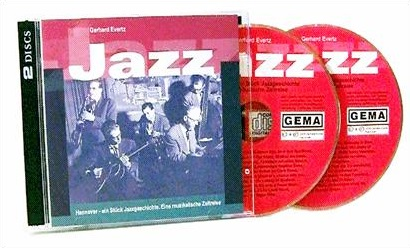

Ein Stück Jazzgeschichte
Die Doppel CD

Ein Stück Jazzgeschichte - Eine musikalische Zeitreise Herausgegeben in 2007
Ein Stück Jazzgeschichte - Eine musikalische Zeitreise Herausgegeben in 2007
CD 01
| # | Interpreten: Titel | Länge |
|---|---|---|
| 1 | Heinz Wehner-Telefunken-Tanz-Orchester: San Francisco | 02:57 |
| 2 | Heinz Wehner-Telefunken-Tanz-Orchester: Delphi Fox | 03:06 |
| 3 | Das Swingtett aus Hannover: Sweet Sue | 02:37 |
| 4 | Das Swingtett aus Hannover: A Bye-Bye-Blues | 03:30 |
| 5 | Das Swingtett aus Hannover: Studio in F | 02:05 |
| 6 | Heinz Both und seine Solisten: Postfach 7 | 02:11 |
| 7 | Heinz Both und seine Solisten: The Slider | 03:09 |
| 8 | Erwin Lehn Südfunktanzorchester: Mind the Steps. Komponist Heinz Both | 02:58 |
| 9 | Die Melodias aus Hannover: I’m gettin’ sentimental over you | 03:05 |
| 10 | Die Melodias aus Hannover: Sieben auf einen Streich | 02:30 |
| 11 | Die Melodias aus Hannover: A little on the lonely Side | 03:01 |
| 12 | Die White Swing Boys: Alexander’s Ragtime Band | 03:07 |
| 13 | Die White Swing Boys: Basin Street Blues | 03:23 |
| 14 | New Jazz Group Hannover mit Bill Russo: An Esthet on Clark Street | 02:56 |
| 15 | New Jazz Group Hannover: S’ wonderful | 02:55 |
| 16 | New Jazz Group Hannover: I don’t stand a Ghost of a Chance with you | 04:26 |
| 17 | New Jazz Group Hannover: 56-line | 03:35 |
| 18 | New Jazz Group Hannover: Bohemè 56 | 03:04 |
| 19 | Trio Evertz-Mahr-Niemann: Lulleby of Birdland | 02:37 |
| 20 | Trio Evertz-Mahr-Niemann: Moonlight in Vermont | 03:06 |
| 21 | Trio Evertz-Mahr-Niemann: It’s only a Papermoon | 03:42 |
| 22 | Die Georgia Street Jazzband: At the Jazzband Ball | 03:37 |
| 23 | Die Georgia Street Jazzband: St. Louis Blues | 03:33 |
| 24 | Georgia-Quintett: Mornin’ | 03:38 |
| 25 | Georgia-Quintett: Night Train | 03:16 |
CD 02
| # | Titel | Länge |
|---|---|---|
| 1 | Lazy-River-Jazzmen: I’v found a new Baby | 03:35 |
| 2 | Lazy-River-Jazzmen: Sweet Sue | 04:49 |
| 3 | Black-Point-Jazzmen: Serenade in Blue | 03:59 |
| 4 | Black-Point-Jazzmen: Doggin’ around | 03:38 |
| 5 | Gudrun Becker-Trio: I can’t give you anything but Love | 01:56 |
| 6 | Gudrun Becker-Trio: Lullaby of Birdland | 02:10 |
| 7 | Gudrun Becker-Michael-Naura-Quintett: Cry me a River | 03:49 |
| 8 | Klaus Seidensticker-Trio. Gudrun Becker Gesang: A foggy Day | 02:30 |
| 9 | Klaus Seidensticker-Trio. Gudrun Becker Gesang: My funny Valentine | 03:26 |
| 10 | Karl-Blume-Combo. Sybille Pagel Gesang: Nice work if you can get it | 01:57 |
| 11 | Karl-Blume-Combo: Fine Knacks for Ladies | 03:14 |
| 12 | Karl-Blume-Combo: Rush | 02:38 |
| 13 | Roland-Schneider-Trio. Gudrun Becker Gesang: Christopher Columbus | 03:23 |
| 14 | Roland-Schneider-Trio. Gudrun Becker Gesang: Medley-They can’t take that away from me; It’s wonderful | 03:26 |
| 15 | Lachi’s Kneipe-Live-Music: Wenn ich dich seh’ fang ich zu träumen an | 03:73 |
| 16 | Lachi’s Kneipe-Live-Music: Bei mir bist du schön | 02:58 |
| 17 | Lachi’s Kneipe-Live-Music: Blue Moon | 03:17 |
| 18 | Lachi’s Kneipe-Live-Music: San Francisco | 01:08 |
| 19 | The Best of Fritz: Hans-Woltersdorf-Quartett mit Fritz Wrzecziono Titel: Fly | 02:38 |
| 20 | The Best of Fritz: Four Flutes-Septett mit Fritz Wrzecziono: All the Things you are | 04:01 |
| 21 | The Best of Fritz: Gunter-Hampel-Quintett mit Fritz Wrzecziono: Amen | 03:42 |
| 22 | Wolfgang Keller, Orgel: Fly me to the Moon | 02:50 |
| 23 | Wolfgang Keller, Orgel: Misty | 03:21 |
| 24 | Fetzer’s Swing Company mit Wolfgang Keller: Sunshine of my Life | 04:00 |
| 25 | Fetzer’s Swing Company mit Wolfgang Keller: Sweet Georgia Brown | 03:37 |